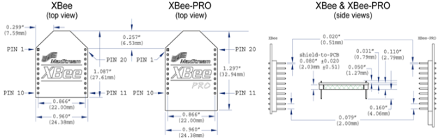
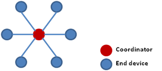
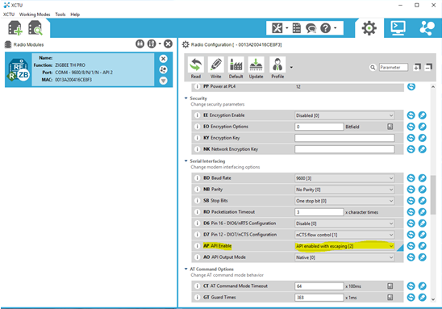
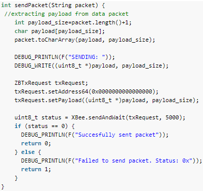
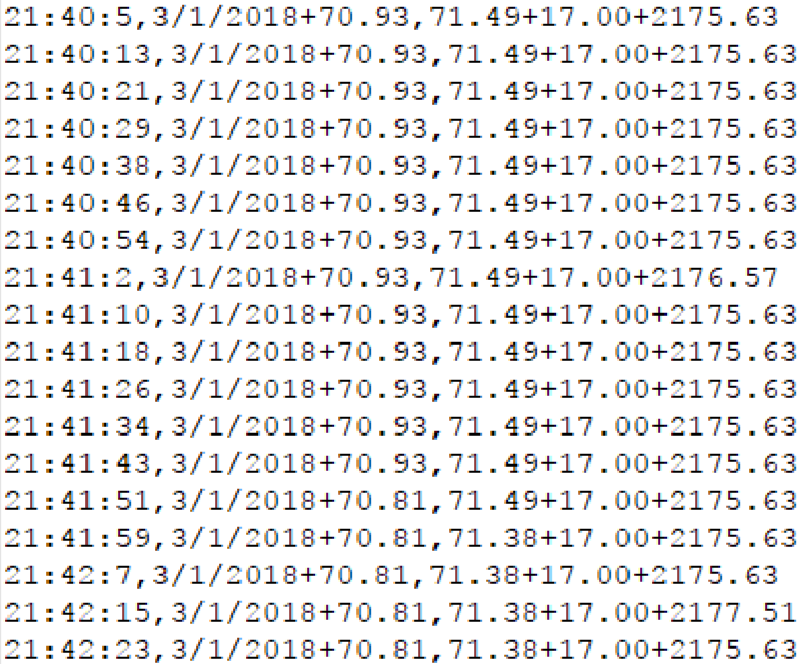
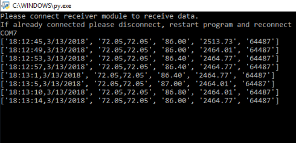
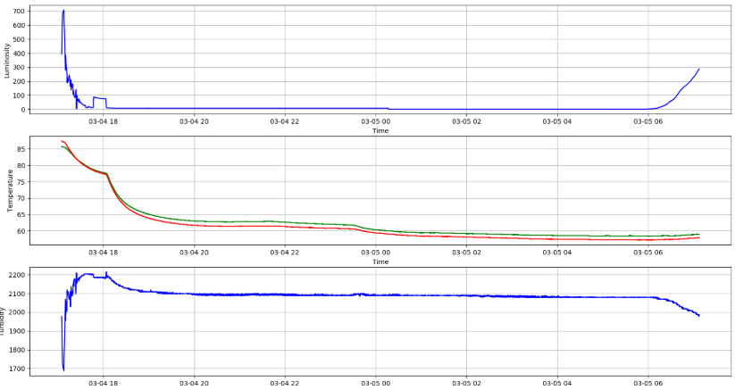
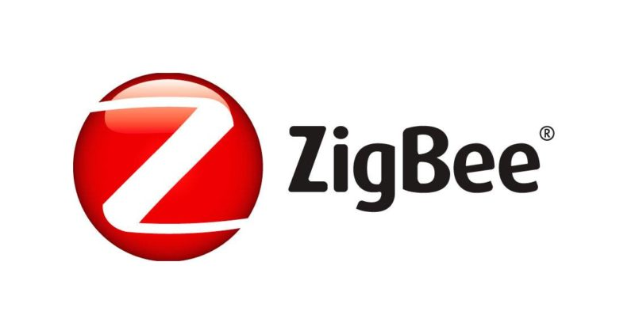

Project Overview
Devised the data collection and transmission subsystems of the buoy prototype based on detailed system requirements
The data sampled by each sensor had to be collected and transmitted to an onshore base station within specific operating parameters. The buoy had to transmit 10 timestamped data samples every hour with a maximum individual packet size of one kilobyte over a maximum distance of 1 mile. To account for failure or corruption during data transmission, a copy of each data sample over a single system operation period of 6 months had to be backed up on each buoy. Due to the operation time of 6 months, the buoy had to be power efficient requiring a low power consumption data transmission solution. After conducting technology investigation, the two data transmission technologies considered were WiFi and Zigbee. For the buoy application, which required a low power and larger range network solution that sends small packets of sensor data from peripheral buoys to a base station, ZigBee was found to be a better solution than WiFi. To store 4464 data log entries over a period of 6 months a simple microSD card solution was chosen. The Xbee pro module was chosen as it uses the 802.15.4 (ZigBee) communication protocol and offers a power efficient outdoor line of site range of 2 miles. The Xbee pro module is also compatible with the Arduino mini which was chosen as the microcontroller for the project. For more details about system requirements and technology investigation, refer to section 2 and 3 of the documentation.
Designed and configured the ZigBee network for sensor data transmission
- 
- 
A ZigBee network is made of three types of node. All ZigBee networks must have a coordinator node. This node is tasked with setting up the network along with all the addressing required for other nodes to join the network. The coordinator must constantly listen for data frames from routers and end devices. Routers can transmit their own data and relay data from other devices. End devices are routers that do not relay data. As end device/coordinator combination already provided the required distance of 2 miles routers were not used for this implementation and a star network configuration was chosen.
The XCTU open source software was used to configure each Xbee device on the ZigBee network. The first step was to configure a device as a coordinator or end device. All devices on the network had to be configured to the same PAN ID to be discovered by one another. The Xbee pro module operates in two modes: namely AT and API mode. The AT or transparent mode is used to send control information from one module to another. It is a very rudimentary mode of operation which can be used to send raw data but is not very efficient in sending data in formatted packets. The API mode on the other hand is a more formatted way of sending data. It packages the data into well formatted frames and sends it to a single destination device on the same network. So, the devices were configured to operate in API mode. All other network configurations were set using the XCTU software. Please refer to section 4.5.4 of the documentation for more details.
Constructed and transmitted data frames form end devices to coordinator over ZigBee network
- 
- 
There are many frames that can sent over the ZigBee network, but this project required two frame types, the transmit request and the receive frame. All transmitted packets start with 0x7E followed by the length and frame details. The 64-bit address indicated the device that the frame must be transmitted to. The checksum helps validate correctness of the packet on receiver. For more information regarding data frame structure refer to pg. 116 of the XBee Pro Module manual.
The function first extracts length of the string and then formats the string in the form of a character array using the toCharArray function. An instance of the ZBtxRequest is used to create and send data frame. The destination address of module was set using the setAdress64 function. For the Buoy, the data was sent directly to the coordinator. This was done by setting address to 0x0. Next the payload was embedded into data frame using the setPayload function. The packet was sent using the sendAndWait function which is called by the instance of XBeeWithCallbacks. The function keeps trying to send the data packet for a fixed number of microseconds (5000ms in this case) until successful. The status of transmission is returned by the function. A zero is returned if transmission is successful.
Transmit frame construction is simplified to a few function calls using the XBee-Arduino library. For a more detailed description about data transmission over ZigBee refer to section 4.5.5 of the documentation. The ideal scenario would involve data sampled from four different sensors one time per hour being sent right away by the Xbee module. But if there is any failure or corruption in transmitted data a redundant copy of data was stored in a MicroSD card on the buoy.
Used python scripts to parse, render and save incoming data frames
The coordinator module is connected to a serial port on a computer through which frame data is received in the form of a bit stream. Just like the transmit frame data, the receive frame data starts address with a 0x7E. This was used to separate on frame from another. The 64-bit source address or the 16-bit source network can be used to uniquely identify the XBee Pro Module from which the frame was received. For more information regarding data frame structure refer to pg. 116 of the XBee Pro Module manual. Sensor data extracted from the frame consisted of the timestamp followed by two temperature readings from the two sensors followed by luminosity and turbidity readings. Once the frames were parsed and sensor data was extracted it was plotted as a live graph using a python script. Changes in each sensor could be monitored in real time using the three graphs. The data was also saved onto a csv file for future research and analysis.
Development was done in Arduino IDE using C/C++. Python was used to write data parsing and rendering scrips. ZigBee 802.15.4 was used for data transmission.


- 